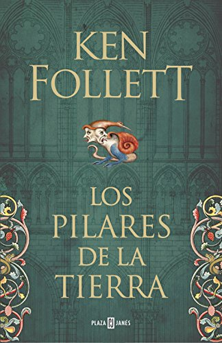
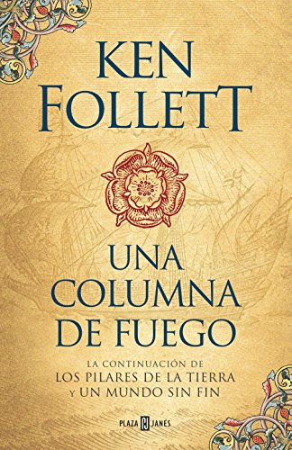
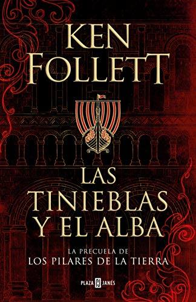

Ken Follett
El escritor de Los Pilares de la Tierra
Biografía
5 de junio de 1949
Cardiff, Gales
Más conocido como Ken Follett, es un escritor británico de novelas de suspense e históricas. En 1989, cambió la temática de espionaje de sus novelas, pasando a escribir Los Pilares de la Tierra en la que narra la construcción de una catedral gótica en el siglo XII. Esta novela se mantuvo en los primeros puestos de ventas en Europa durante más de 10 años. Sus siguientes novelas han tenido gran éxito y ha recibido diversos premios por ellas. Algunas han sido adaptadas al cine o a series de televisión.
Los Pilares de la Tierra
-

Los Pilares de la Tierra
1989Ambientada en Inglaterra en la Edad Media, durante un periodo de guerra civil conocido como la anarquía inglesa, relata la construcción de una imponente catedral.
-
Un Mundo Sin Fin
2007Tiene lugar en la misma ciudad ficticia, Kingsbridge, pero 200 años después. Algunos personajes son descendientes de los de la primera novela.
-

Una Columna de Fuego
2019Este libro es la tercera parte de la serie de Kingsbridge Los Pilares de la Tierra. La primicia es la guerra de religiones que se vivió en Europa a partir de 1562.
-

Las Tinieblas y el Alba
2020La pruecuela de Los Pilares de la Tierra. En este libro, Ken Follett embarca al lector en un épico viaje que termina donde Los pilares de la Tierra comienza.